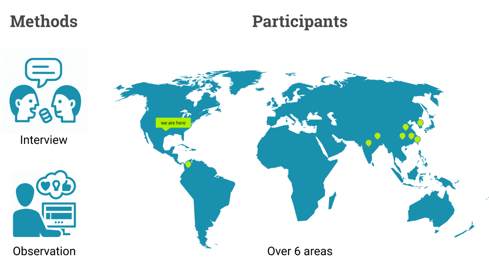
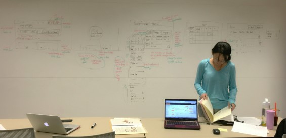

Flight Ticket Website Redesign for International Travelers
Catergory: research, design
Keywords: interivew, affinity diagram, model, workflow, persona, wirefram, prototype, evaluation
Team: 4 (most of the works were done by team, represent the work contributed mainly by myself)
We redesigned a flight-booking website based on the special needs of international students who would buy airline tickets to travel between their home countries and America. International travel involves complex issues, such as time difference, custom rules, flight connections, etc. So the redesign took these issues into consideration and provided several features to create a stressless travel experience.
Contextual Inquiry and Analysis
We recruited volunteers from over 5 areas of the world. We interviewed and observed their flight ticket searching behaviors, asked their concerns, needs, and pain points regarding an international travel.
Extracting Requirments and Modeling
According to The UX Book, there are two gaps between the contextual inquiry and analysis phase and the design phase: requirements extraction and design-informing model extraction.
For requirements extraction, we need to support the user's activity needs, functional needs, and emotional needs. A walkthrough of contextual data in work activity affinity diagram is a good method to achieve the goals.


We refined the records into brief activity notes and shared our results together so that each team member could quickly reach to the same cognition. Then we used affinity diagram to cluster and organize the information.
As to the second gap, design-informing model extraction, it's important to build the models not because they appear directly in a design, but because "they are artifacts that embody, drive, inform, and inspire the design".

We built the old website workflow model to define and clarify the work roles involved and the workflow between them. Therefore we were able to find all the barriers, the problems that impeded the user's activities. The barriers are marked as red lightning.
The workflow model shows the relationship between work roles and machine roles, yet it was not detailed enough regarding the workflow within the flight ticket website. So we built the task structure model.
The task structure model based on our idea of how the system should function. I helped did the final drawing of the task inventory using Visio .
Designing
After crossing the two gaps, the designing phase became clearly directed. To trim down the size of the project and be focussing, we tried to define the target user of our redesign.

We classified the users into 4 different classes based on their experience with flight booking sites and experience with world traveling. We decided that our target users are people who belong to class b and class a, the people who are not expert at world traveling.
We moved further to create a persona who belongs to the class b and it helped us keep the user in mind when thinking about new features.
We sketched the old design interfaces. Then we marked out the flaws in red and made suggestions in green.
Prototyping
We started with creating few wireframes. Then the task was divided into 3 parts: search and results, sign up and sign in, travel information and travel assistant. I helped to make the prototype of search and results and resembled the 3 parts together with consistent style .
1. A new result displaying method to let the user be able to see more detailed flight information. Especially for travel time, the users would know how long they will spend on the plan, how much do they have to transfer and is it enough for passing a custom, etc.
2. A new travel assistant system that dynamically shows users information they concerned about international travel, including how to get prepared for the trip, what will it be like when flying with a certain airline, how to transfer from terminal A to terminal B at a certain airport, etc. The system will not only display information on the website but will also push some important information to the user via text or email.
3. The travel assistant system as a feature to let users create alert sending to any family member or friend they want. The system can send messages to let them know the changes of the flight status so that the user won’t need to bother connecting with them in case the signal is bad.
Evaluation
We adopted usability testing using think-aloud method, cognitive walkthrough, and heuristic evaluation. The results were pretty good with few flaws of the sign up/sign in function. So we fixed them.